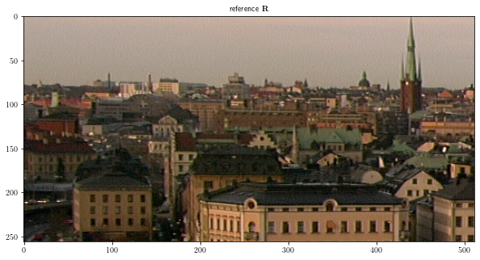
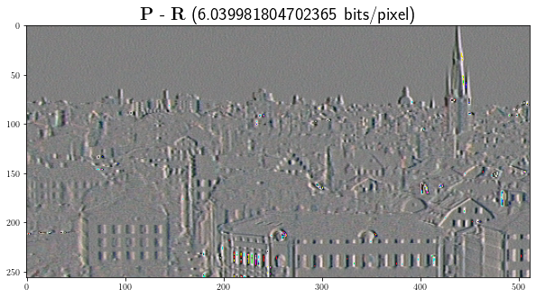
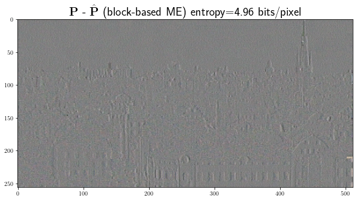
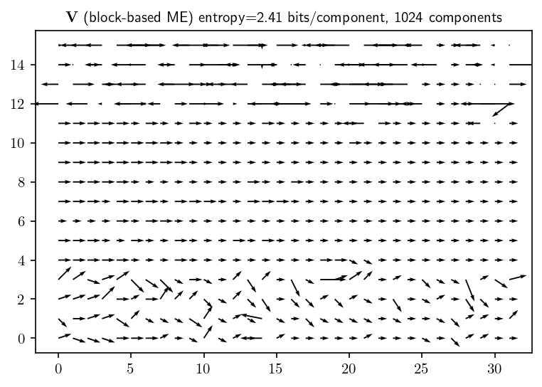
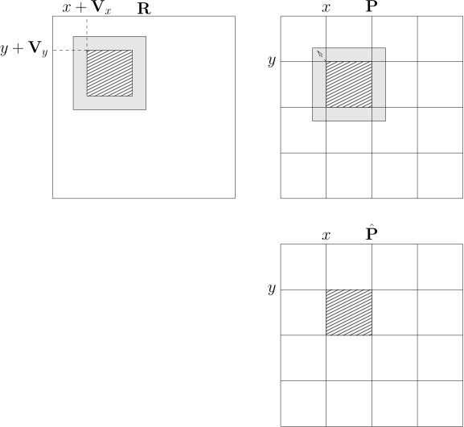
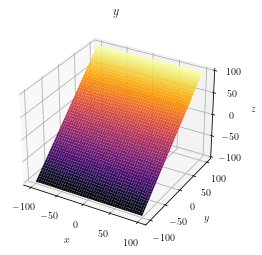
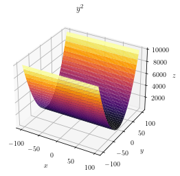
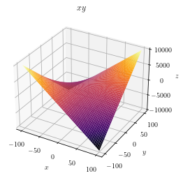

ME (Motion Estimation) is the process of determining the MVs (Motion
Vectors) that describe the mapping of the pixels from one frame (2D image) to
another.
1.1 Motion Estimation (ME) for what?
Temporal correlation between video
frames1
can be removed by MC (Motion Compensation). MC implies to decrease (usually by
substracting a prediction frame) the amount of information in the frames. The
removed information must be available at both, the encoder and the decoder side, in
order to make this a reversible process.
Specifically, a MCP (MC Predictor) inputs one (or more) reference frame(s) \({\mathbf R}=\{{\mathbf R}_i\}\), and
a motion vectors field \(\overset {{\mathbf R}\rightarrow {\mathbf P}}{\mathbf M}\) that indicates how to project \(\mathbf R\) onto the predicted frame \(\mathbf P\), and
outputs a prediction frame \begin {equation} \hat {{\mathbf P}} = \overset {{\mathbf R}\rightarrow {\mathbf P}}{\mathbf M}({\mathbf R}). \label {eq:MCP1} \end {equation}
In this milestone we analyze different algorithms to determine \(\overset {{\mathbf R}\rightarrow {\mathbf P}}{\mathbf M}\) (in a futher milestone
we will see how to remove the \(\hat {{\mathbf P}}\)’s information from \(\mathbf P\)). At this moment, for the sake of
simplicity, in the rest of this discussion it will be supposed that the number of
reference frames in only 1.
1.2 But ... what exactly do we need?
Our main objective is to minimize the differences (for example, the L\(_2\) distance)
between \(\mathbf P\) (the predicted frame) and \(\hat {\mathbf P}\) (the prediction frame), i.e. minimizing
\begin {equation} {\mathbf E} = {\mathbf P} - \hat {\mathbf P} \end {equation}
in order to get that \(\mathbf E\) will be more compressible than \(\mathbf P\). To achieve this, we can
compute \(\overset {{\mathbf R}\rightarrow {\mathbf P}}{\mathbf M}\) that simply minimizes the L\(_2\) energy of \(\mathbf E\), \(||{\mathbf E}||^2\), or we can compute a \(\overset {{\mathbf R}\rightarrow {\mathbf P}}{\mathbf M}\) that also
describes the Optical Flow [6] (OF) between the pixels of \(\mathbf R\) and \(\mathbf P\), that although
not necessarily has to minimize \(||{\mathbf E}||^2\), tries to show the true movement of the
pixels between the both frames. This second option has the advantage of
generating more visually pleasing reconstructions when the code-stream is
partially received and makes easier to predict the content of the motion
fields.
The first type of techniques are simply called “ME techniques”, and are usually
faster2
than the second type, based on the estimation of the OF.
Now, let’s see some of the most used techniques for estimating the motion
between two frames. Notice that, in general, better estimations can be found if we
suppose motion models such as that the objects exhibit inertia. However, this case
will not be considered for now.
Figure 1: ME using disjoint blocks. \(({\mathbf M}_x, {\mathbf M}_y)\) is the motion vector that indicates where
the block \((x,y)\) of \(\mathbf P\) is found in \(\mathbf R\).
Block-based ME is the simplest ME algorithm (see the Fig. 1), \(\mathbf P\) is divided in
blocks of (for example) 16x16 pixels, and we can use the (R)MSE that measures the
distance in L\(_2\) (also known as the Euclidean distance) between each block of \(\mathbf P\) and its
surrounding pixels in \(\mathbf R\) (the so called search area) [12]. For each block, a motion
vector that indicates the best match (smaller distance) is found. The set of motion
vectors form the motion vectors field \(\overset {{\mathbf R}\rightarrow {\mathbf P}}{\mathbf M}\) that obviously, except for a block size of 1x1,
will be less dense than \(\mathbf R\) and \(\mathbf P\). Notice, however, that, it is not a good idea to use such
a small block size because, in general, the motion vectors will not describe the true
motion in the scene.

Figure 2: A tile of the first image of the Stockholm sequence. This is the reference
(\(\mathbf R\)) frame.
Figure 3: The same (coordinates) tile of the second image of the stockholm
sequence. This is the predicted (\(\mathbf P\)) frame.

Figure 4: \({\mathbf P} - {\mathbf R}\): shows the differences between both tiles. The entropy of the residue
is displayed between parentheses.
Figure 5: The prediction frame (\(\hat {\mathbf P}\)). See this.

Figure 6: The prediction-error frame (\({\mathbf R} - {\hat {\mathbf P}}\)). See this.
As it can be seen in the Figures 2, 3, 4, 5, and 6, the MVs generated by
block-based ME can significantly decrease the entropy.

Figure 7: Motion vectors to map \(\mathbf P\) (which is divided into disjoint blocks) onto \(\mathbf R\).
See this.
However, as it can be seen in the Figure 7, the motion information computed by
the block-based ME algorithm not always represents the true motion in the scene in
the case of using block-based matching. This can be a drawback, for example, for
solving object tracking problems. In the case of video coding, the main disadvantage
of such issue is that the entropy of the motion fields increases, which also decreases
the compression ratio.
1.4 Overlapped block matching

Figure 8: ME using overlaped blocks.
A better approximation to the OF for small block sizes can be found if we allow
the blocks to overlap in \(\mathbf P\) [9], case in which the block size for performing the
comparisons must be larger. Again, as it happens with the disjoint case, only the non
overlaped pixels are used for building the prediction (see the Fig. 8). Obviously, the
main drawback of this technique is that it can be more computationally demanding
than the previous one.
Figure 9: The prediction frame (\(\hat {\mathbf P}\)). See this.
Figure 10: The prediction error frame (\({\mathbf R} - {\hat {\mathbf P}}\)). See this.
Figure 11: Motion vectors to map \(\mathbf P\) (from which each pixel has been mapped)
onto \(\mathbf R\). See this.
The dense ME algorithm can obtain better predictions than the block-based one,
as it can be seen in the Figures 9 and 10. The MVs are also more coherent (see
Figure 11).
Figure 12: ME using overlaped blocks, averaging the overlaped pixels.
An improvement of the previous technique can also average the overlaped pixels
in the prediction frame \(\hat {P}\), as it has been shown in the Fig. 12.
1.5 Machine learning
ANNs (Artifical Neural Networks) can be trained to estimate the motion between
frames [4]. For the training of ANNs, animation videos are generally used where the
motion fields are known with precision.
2 Motion Compensation in the DWT Domain
2.1 ME in a transformed domain



No motion
Constant velocity in \(X\)
Constant velocity in \(Y\)
Constant acceleration in \(X\)
Constant acceleration in \(Y\)
Constant accelarion in diagonal
Figure 13: Correlation kernels (basis functions) used by the polynomial
expansion of the Farnebäck’s ME algorithm. See this. The analized motion is
depicted below the plot of each basis.
The motion can be estimated also in a transformed domain. One of these
estimators is the Farnebäck’s algorithm [5], which uses the transform defined by the
basis functions \begin {equation} \{1, x, y, x^2, y^2, xy\} \end {equation}
(see the Figure 13). In this transform domain, which is applied by overlapped
regions, the corresponding subbands quantify the tendency of the image to increase
its intensity in different 2D directions, and therefore, it is more efficient to know the
direction in which the objects are moving.
Figure 14: The prediction frame (\(\hat {\mathbf P}\)). See this.
Figure 15: The prediction error frame (\({\mathbf R} - {\hat {\mathbf P}}\)). See this.
Figure 16: Motion vectors to map \(\mathbf P\) (from which each pixel has been mapped)
onto \(\mathbf R\). See this.
The Farneback’s ME is a dense ME, and it provides subpixel interpolation
because the MVs are real numbers (see the Figures 14, 15 and 16). Notice that the
prediction is the best of the all tested algorithms, probably by the subpixel
accuracy.
2.2 Removing the temporal redundancy through Motion Compensation
(MC)
The next natural step in the process of decorrelating the sequence of frames is to
remove the temporal redundancy by means of Motion Compensation (MC).
Basically, MC consists in substracting to the video data a prediction performed
with the information that is avaliable to the decoder. If this prediction is
accurate, the result of this operation is a residual video with a lower temporal
redundancy, that can be compressed with a higher compression ratio (there
is less information to encode in the residue sequence than in the original
one).
2.3 Integer pixel accuracy In-Band Motion estimation and Compensation
(IBMC)
At this stage of the encoding process, the video data is represented in the DWT
domain, and therefore, we need to perform an In-Band Motion estimation and
Compensation (IBMC) [1]). Let’s suppose that the number of levels of the DWT is 1,
and therefore, each frame has been decomposed into two 2D subbands \(L\) and \(H\)
(remember that using the notation introduced in the previous milestone, \(H\) has inside
the three high-frequency subbands: \(LH\), \(HL\) and \(HH\), and that \(L=LL\)). This discussion will be also
constrained to the case in which the movement of the objects in the scene is a integer
number of pixels.
2.4 The lack of shift-invariance in the DWT domain
In our case, the video data is represented in the DWT domain, and therefore, we
need to perform the so called In-Band Motion Estimation and Compensation [1]).
Let’s suppose that the number of levels of the DWT is 1, and therefore, each frame
has been decomposed into two 2D subbands \(L\) and \(H\) (remember that using the notation
introduces in the previous milestone, \(H\) has inside the three high-frequency subbands: \(LH\), \(HL\)
and \(HH\), and that \(L=LL\)). So, after using the MDWT, MC must be performed using the DWT
coefficients.
Unfortunately, as a consequence of the downsamplers used during the DWT
to achieve critical sampling and the aliasing between the subbands, DWT
decompositions are shift-variant. This can be seen in the Fig. 17 were some DWT
coefficients of a test video with three frames (with a 1-pixel constant speed moving
(to the left) cicle“empty”) has been shown. As it can be seen, when the circle has
been moved only one pixel, the value of the coefficients that correspond to the
circunference of the circle are different between the reference frame and the predicted
frame. This makes quite difficult to estimate the motion, and therefore,
compensate it. However, when the circle has traveled two pixels, a perfect match is
performed.
Notice also that shift-variance is also generated after the inverse transform when
the coefficients are filtered or quantized, because the aliasing between the filters is
not completely cancelled in this case [2].
Figure 17: A demonstration of the shift-variance of the DWT.
The reason why the 1-pixel movement is generating different coefficients in the
reference and the predicted frames is because a 1-pixel motion cannot be represented
using always the same phase (remember that with the downsampler we are basically
selecting only one the two possible phases of the output of the analysis filters: the
even samples or the odd samples). Lets suppose that the downsampler discards the
odd coefficients (let’s refer them as odd-phase coefficients). In this case, the
even-phase cofficients of the reference frame are the same than the odd-phase
coefficients of the predicted frame (this can be seen in this notebook). Therefore, in
the 1D case, when the motion is “even”-type (that is, a displacement of a even
number of samples) we should compensate the even-phase coefficients of the
reference and the predicted frame, while when the motion is “odd”-type we
should compensate the odd-phase coefficients of the predicted frame with a
prediction generated with the even-phase coefficients of the reference frame, or
viceversa.
There are different alternatives for recovering the “lost” phase during the DWT
(in the 1D case):
MC-then-downsample: Perform first the MC stage directly over the output
of the analysis filters, and then, selectively downsample the result. Notice
that the downsampler should select the right phase, depending on the
type of motion detected (“odd” or “even”). This information (the selected
phase), should be available at the decoder, along with the motion fields.
Delay-then-DWT: Perform two identical DWTs, one to the original signal,
and the other to a one-sample delayed signal (remember than a movement
of one pixel will change the phase at the output of the DWT). Thus, the
the DWT applied to the original signal will generate one of the phases and
the DWT applied to the delayed signal will generate the other one.
CODWT: Use the current (single phase) L and H coefficients to compute
the missing phase, using the CODWT (Complete-to-Overcomplete
DWT) [1] (a new type of DWT applied to the DWT coefficients).
Each alternative has pros and cons. If the DWT has been implemented using
convolution, MC-then-downsample should be a fast alternative. However, if the DWT
uses Lifting, Multiple-DWT-then-MC should be fast also, because only one phase is
computed by the DWT. These two options can be used with any DWT
filters. On the other hand, CODWT needs specific designs form each DWT
filters. Notice that, in any case, the solution is reached after using the ODWT
domain.
In the 2D case, and always working with only one level of the DWT, we have up
to four different phases: (even, even)-, (even, odd)-, (odd, even)-, and (odd,
odd)-phase coefficients. Thus, depending on the type of motion detected, the
corresponding phase should be selected.
2.5 Near shift-invariance in the IDWT (Interpolated DWT) domain
As it was commented before, the causant of the shift-variance in the critically
sampled DWT domain is the use of the downsamplers. At this point we have
basically two different alternatives:
Use the Algorithme à Trous (AaT) [8], which removes the downsamplers
from the DWT, generating the so called Overcomplete DWT (ODWT).
Notice that, because the downsamplers are removed, the aliasing artifacts
produced by the downsamplers is also avoided.
Approximate the AaT coefficients by interpolating the DWT coefficients
using the DWT synthesis filters. In this case, the aliasing is not avoided,
but the shift-variance problem is reduced.
Unfortunately, DWT decompositions are shift-variant as a consequence of the
downsampling performed during the DWT to achieve a critical representation. This
can be seen in the Fig. 18 were some DWT coefficients of a test video with three
frames has been shown. As it can be seen, when the circle moves to the left only one
pixel (as happens between the frames 0 and 1), the value of the coefficients that
correspond to the circunference of the circle are different between the reference frame
(0) and the predicted frame (1). This makes quite difficult to estimate and
compensate the motion between frames. Notice also that the effects of shift-variance
is also visible after using the inverse transform when the coefficients are filtered or
quantized, because the aliasing between the filters is not completely cancelled in this
case [2].
Figure 18: A demonstration of the shift-variance of the DWT. Similar results
have been obtained for other filters. See this notebook.
However, suprisingly, at it can be also seen in the Fig. 18, when the circle has
traveled two pixels (frames 0 and 2), a perfect match is achieved! The reason why the
1-pixel motion generates different coefficients in the reference and the predicted
frames, and the same coefficients for a 2-pixel motion is because, in the first case the
right coefficients were discarded by the downsamplers, and in the second case
not.
Usually, we call phases to the two possible coefficients resulting from one (1D)
filter to be subsampled, being the even phase, the even coefficients, and the odd
phase, the odd coefficients. Therefore, when the motion is of type “even” (when we
have a \(2N\)-pixels motion), we should use the even phase to compensate the frames, and
viceversa (use the odd phase to compensate a \(2N+1\)-pixels motion). Notice that in the 2D
case, and always working with only one level of the DWT, we have up to four
different phases: (even, even)-, (even, odd)-, (odd, even)-, and (odd, odd)-phase
coefficients. Thus, depending on the type of motion detected, the corresponding
phase should be selected.
2.6 Recovering the lost phases
Figure 19: A demonstration of the shift-invariance of the ODWT. See this
notebook.
There are different alternatives for regenerating the phases discarded by the
subsamplers of the DWT. This is equivalent to compute the Overcomplete DWT
(ODWT) [8].
Use the Algorithme à Trous [8], which basically consists in removing
the downsamplers, avoiding thus the aliasing artifacts generated by the
noncompliance with the sampling theorem. See this notebook.
Considering the previous experiments, it’s easy to see that if we shift
the signal one sample and perform the DWT, we get the “lost” phase.
This method has been used to perform efficient MC in the DWT
domain [10, 7]. See this notebook.
Apply some transform (such as
for example, the CODWT (Complete-to-Overcomplete DWT) [1] to the
DWT to reconstruct the ODWT.
The Fig. 19 shows the shift invariance of the ODWT.
2.7 About using the lost phases in IBMC
Up to date, all the video codecs that use critically sampled IBMC also use
block-based motion compensation. This technique divides the frames into
non-overlaping blocks and computes a motion vector for every block, that provides a
projection (a prediction) \(\hat {P}\) of the reference frame \(R\) that must be as close as
possible to the predicted frame \(P\). These blocks usually have a size of 16x16
pixels.
The use of blocks imples that:
If \(N\) is the number of pixels in a frame, \(N/256\) (for 16x16 blocks) is the number of
motion vectors. Therefore, if the motion vectors field has to be sent to the
decoder, the data overhead is small (although this depends on the length
of the representation of the texture).
All the coefficients that correspond to the same block has the same phase.
Thus, if the phase also has to be sent to the decoder, again, the data
overhead can be considered small.
Unfortunately, there is a problem with mixing the phases. To reconstruct the
border pixels of the blocks, the adjacent (with the same phase) coefficients must be
also used by the decoder (see this notebook). For this reason, the size of the
blocks affects to the compression ratio (the smaller the blocks, the higher the
number of adjacent coefficients, and therefore, the lower the compression
ratio). We can think that this effect can be mitigated using larger block
sizes, but this will also affect to the compression ratio because the quality of
the predictions worsen with the increment of the size of the blocks. This
carries an optimization problem that it’s hard to solve, especially in real-time
applications.
2.8 MC in the Laplacian Pyramid
The Laplacian Pyramid, that was proposed by Burt and Adelson [3] and has been
used for the design of spatially-scalable image and video codecs, such as
SHVC [11].
Figure 20: A demonstration of the shift-invariance of the LP. See this notebook.
The LP is a frame expansion that generates an expanded (not critical)
octave-band decomposition, and in some way, it can be considered one of the
precursors of the dyadic DWT. Unlike in the DWT, such expansion is consequence of
that the filters used for creating the LP are not orthogonal and therefore, they do not
cancel the aliasing between them (see this notebook) when their downsampled
outputs are added.
As a consequence of that the downsampling can not be used without violating the
perfect reconstruction, the redundancy in the LP tends to 2 with the number of
levels of the pyramid, which affects negatively to the compression ratio. On
the contrary, an advantage of this is that the LP is shift-invariant in the
high-frequency subband (see the Fig. 20), and of course, like the DWT,
in the low-frequency subband when the motion is a multiple of 2 (see the
Fig. 20)..
Figure 21: A demonstration of the near shift-invariance in the [H] subband of
the PDWT. See this notebook.
2.9 Pyramid DWT (PDWT)
Inspired in the LP, we can estimate and componsensate the motion in an alternative
representation of the DWT decomposition, that we have called Pyramid DWT.
In fact, a PDWT decomposition is a special case of a LP where the filters
are (bi)orthogonal DWT filters (in this case, we say that the LP is a tight
frame and therefore, it can be downsampled without lossing the perfect
reconstruction).
The 1-levels PDWT (that has two levels in its pyramid) of the frame \(X\) is defined
by \begin {equation} \{L, [H]\} = \{LL, \text {DWT}^{-1}(0, LH, HL, HH)\} = \{LL, \text {DWT}^{-1}(0, H)\}, \label {eq:PDWT} \end {equation}
where \begin {equation} \{LL, LH, HL, HH\} = \text {DWT}(X). \label {eq:DWT} \end {equation}
The \(S\) levels CS-LPT\(^S\) is computed simply by appliying the Eq. ?? to the subband \(L\),
recursively.
Figure 22: Prediction error between frames 0 and 1, in the PDWT domain (left)
and the DWT domain (right). See this notebook. The prediction error between
frames 0 and 2 is zero. Remember that we transmit \(H\), not \([H]\).
The PDWT is only near shift-invariant as it can be seen in the Fig. 21. However,
it has several advantages:
The CS-LPT is as compact as the DWT.
The phases are not considered, which simplifies the ME/MC process and
enables the use of any DWT filter.
The error generated by the lack of shift-invariance for the odd-type motion
is smaller than for the DWT (see Fig. 18). As it can be seen in the Fig 22,
the energy of the error is the same in \([H]\) and \(H\), but the energy is concentrated
in only one critical subband (HL).
2.10 MC in the PDWT domain
It’s reasonable to expect that the motion of an object between the frames \(R\) and \(P\) must
move their low and the high frecuencies in the same amount of pixels. With
this idea in mind, we estimate the motion in the \([H]\) subband using only the
information provided by the low-frequency subband \(L\). More concretely, we
implement:
Figure 23: A demonstration of the near shift-invariance in the [L] (PDWT)
subband. See this notebook.
In order to increase the accuracy of the ME (see the Fig. 23, we interpolate the
low-frequency subbands of \(R\) and \(P\): \begin {equation} [P.L] = \text {DWT}^{-1}(P.L, 0), \end {equation}
\begin {equation} [R.L] = \text {DWT}^{-1}(R.L, 0). \end {equation}
Estimate the motion between \([P.L]\) and \([R.L]\). The output of this step is a
motion vectors field \(\overset {[P.L]\rightarrow [R.L]}{V}\), that describes how to project the \([P.L]\) onto \([R.L]\).
Notice that \(\overset {[P.L]\rightarrow [R.L]}{V}\) should also be a good candidate for mapping \(P\) onto
\(R\).3
Use \(\overset {[P.L]\rightarrow [R.L]}{V}\) and \([R.L]\) to generate a prediction \([\hat {P}.L]\), and \([R.H]\) to generate a prediction \([\hat {P}.H]\). We define
the prediction error in the low-frequency subband as \begin {equation} [E.L] = [P.L] - [\hat {P}.L], \label {eq:prediction_error_L} \end {equation}
and the prediction error in the high-frequency subband as \begin {equation} [E.H] = [P.H] - [\hat {P}.H]. \label {eq:prediction_error} \end {equation}
Notice that \(\overset {[P.L]\rightarrow [R.L]}{V}\) depends only on \(R.L\) and \(P.L\), not on the high frequency subbands.
Compute the Element-Wise (EW) minimum of \([P.L]\) and \([E.L]\): \begin {equation} \{[T],[M]\} = \text {EW-min}([P.L], [E.L]) \label {eq:EW-min} \end {equation}
where \begin {equation} [T]_{i,j}=\text {min}([P.L]_{i,j}, [E.L]_{i,j}) \end {equation}
and \([M]\) is a binary matrix defined by \begin {equation} [M]_{i,j} = \left \{ \begin {array}{ll} 0 & \text {if}~[P.L]_{i,j} < [E.L]_{i,j} ~(\text {I-type~coefficient})\\ 1 & \text {otherwise}~(\text {P-type~coefficient}). \end {array} \right . \label {eq:matrix} \end {equation}
Output \begin {equation} [O]_{i,j} = \left \{ \begin {array}{ll} [P.H]_{i,j} & \text {if}~[M]_{i,j} = 0~(\text {I-type~coefficient})\\ {[}E.H{]}_{i,j} & \text {otherwise}~(\text {P-type~coefficient}). \end {array} \right . \label {eq:output} \end {equation}
Realize that it must hold that \begin {equation} \sigma ^2_O \le \sigma ^2_E, \label {eq:vars} \end {equation}
where \(\sigma ^2\) denotes the variance, \(O=\text {DWT}([O])\), and \(E=\text {DWT}([O])\). Eq. ?? implies that \begin {equation} \text {CR}_O \ge \text {CR}_E \label {eq:crs} \end {equation}
should hold, where CR stands for Compression Ratio.
\(O\) is the high-frequency subband that we will send from the encoder to the
decoder, and it can be seen, it is composed of prediction error coefficients
and original coefficients. Making a comparison with the procedure
followed in most video coding standards, the prediction error coefficients
represent predicted blocks (P-type blocks) or skipped blocks (S-type
blocks)4,
and the original coefficients are equivalent to the intra(coded) blocks (I-type
blocks).
2.11 Subpixel accuracy
Objects in real scenes usually move a rational number of pixels, and therefore, even
when the input frames seems to be the same, numerically they aren’t. To deal with
this drawback, interpolation can be used to increase the resolution of the frames (MC
in the frame domain) or the subbands (MC in the subband domain), performing thus
a MC with increased accuracy.
Interpolation and DWT are both linear operators, and therefore, are
interchangeable. This means that we can interpolate the input frames and work as if
the motion where integer-pixel, or we can interpolate the DWT coefficients. In both
options, the number of
3 What you have to do?
Please, using this notebook, research the posibilities for performing MC of other
DWTs available at PyWavelets.
4 Timming
Please, finish this notebook before the next class session.
5 Deliverables
None.
6 What do I have to do?
Figure 24: Basic encoding problem.
Using the encoding system described in the Figure 24, and defined by
\begin {equation} \left \{\
\begin {array}{l} \tilde {\mathbf R} = \text {Q}_{\mathbf R}({\mathbf R}) \\ \tilde {\mathbf E} = \text {Q}_{\mathbf E}\big ({\mathbf P}-\overset {{\mathbf R}\rightarrow {\mathbf P}}{\mathbf M}(\tilde {\mathbf R})\big ) \end {array} \right . \label {eq:forward} \end {equation}
and \begin {equation} \begin {array}{l} \tilde {\mathbf P} = \tilde {\mathbf E} + \overset {{\mathbf R}\rightarrow {\mathbf P}}{\mathbf M}(\tilde {\mathbf R}), \end {array} \label {eq:backward} \end {equation}
find \(\text {Q}_{\mathbf {R}}\) and \(\text {Q}_{\mathbf {E}}\) that minimize in the RD domain (the RD curve of) \begin {equation} \text {MSE}(\{\mathbf {R},\mathbf {P}\},\{\hat {\mathbf {R}},\hat {\mathbf {P}}\}) = \frac {\text {MSE}({\mathbf R},\hat {\mathbf R}) + \text {MSE}({\mathbf P},\hat {\mathbf P})}{2}, \end {equation}
set that \begin {equation} \text {MSE}({\mathbf R},\tilde {\mathbf R}) = \text {MSE}({\mathbf P},\tilde {\mathbf P}). \label {eq:constant_quality} \end {equation}
Equation ?? indicates that all the decoded frames should have the same distortion
(from a human perception point of view). Notice that the transform defined by the
Equations ?? and ?? is not orthogonal and therefore, the “subbands” \(\tilde {\mathbf R}\) and \(\tilde {\mathbf P}\) are not
independent. It can be seen that \(\text {Q}_{\mathbf R}\) affects to the selection of \(\text {Q}_{\mathbf E}\), because \(\tilde {\mathbf R}\) is used as
reference for finding \(\mathbf E\).
[4]A. Dosovitskiy, P. Fischer, E. Ilg,
P. Hausser, C. Hazirbas, V. Golkov, P. Van Der Smagt, D. Cremers, and
T. Brox. FlowNet: Learning Optical Flow with Convolutional Networks.
In Proceedings of the IEEE international conference on computer vision,
pages 2758–2766, 2015.
[6]B.K.P. Horn and B.G. Schunck. Determining Optical Flow. In
Techniques and Applications of Image Understanding, volume 281, pages
319–331. International Society for Optics and Photonics, 1981.
3Notice also that the number of vectors in \(\overset {[P.L]\rightarrow [L.L]}{V}\) can be as high as the number of pixels in \(R\) (and \(P\)),
although this will depend on the accuracy of the ME/MC.
4S-type blocks are an special case of P-type blocks that have a prediction error so small that is
more beneficial not to send their texture.